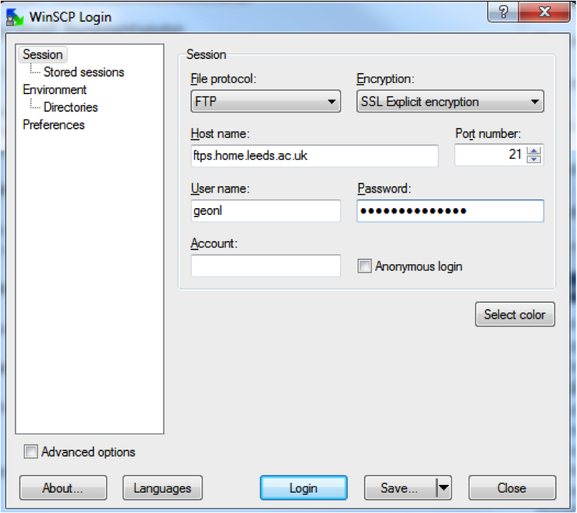
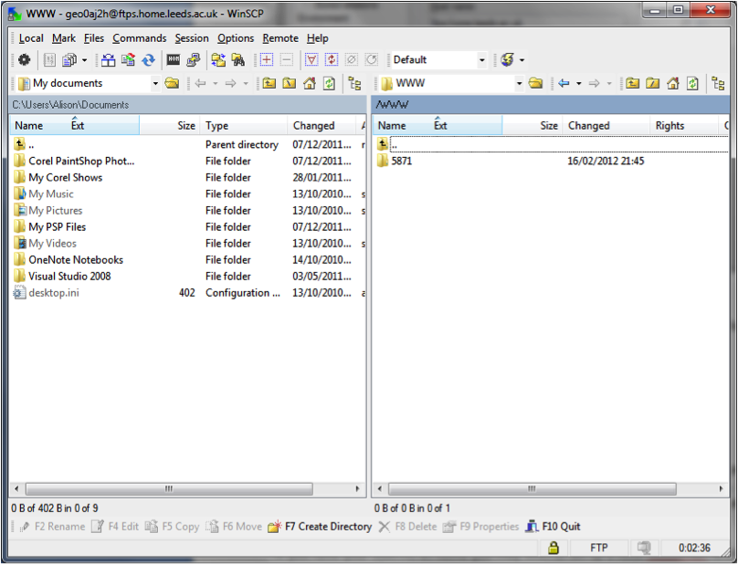

Over the course of this block of Web-GIS, we will gradually build up a sophisticated map using features of the Google Maps API. There is a major prerequisite to doing this, which is that it is necessary to have access to a web server on which you can publish web pages. It is also helpful to have a good editor, such as notepad++ for working with HTML files, although this is often a matter of personal preference.
The sole purpose of this tutorial is to get you to access your personal webspace both on and off campus.
All students (and members of staff etc.) at Leeds University are able to
create and publish their own pages, using the server
www.personal.leeds.ac.uk For full details of how to do this, see:
ISS: How to create a personal homepage
Note that you must read the guidelines for web page creation, which describe various contents that you must not include in a personal web page published by the university. The following instructions should work to enable you to access your personal space both on and off campus.
If you are working from a computer on campus, accessing your personal webspace is very straightforward.
To access your personal webspace off campus we need to FTP into your account. FTP stands for File Transfer Protocol. Simply, it is a secure method of transferring files between computers. To FTP we are going to use a program called WinSCP. This has a graphical interface that makes transferring files very easy.
Download the program from the WinSCP download site
Under host name enter ftps.home.leeds.ac.uk and then put your ISS username and passwords in (these are the passwords that you access the VLE with). Under protocol select FTP and SSL Explicit encryption. Hit Login.

Hit yes to any dialog box that comes up. You then have before you the WinSCP directories with your home drive on the left and this time your personal space on the right.

Login to your personal space using WinSCP as outlined above.